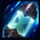

Ekko
| Ekko The Boy Who Shattered Time | |
|---|---|
| Release date | 29.05.2015 |
| Class | Assassin |
| Positions | Middle, Jungle |
| Resource | Mana |
| Range type | Melee |
| Adaptive type | Magic |
| Base statistics | |||
| Health | 585 – 2030 | Mana | 280 – 1470 |
| Health regen. | 9 – 24.3 |
Mana regen. | 7 – 20.6 |
| Armor | 32 – 83 | Attack damage | 58 – 109 |
| Magic resist. | 32 – 53.25 | Crit. damage | 175% |
| Move. speed | 335 | Attack range | 125 |
Ekko e un tânăr genial care a crescut pe străzile din Zaun și a învățat să manipuleze timpul în așa fel încât să iasă întotdeauna în avantaj. Propria lui invenție, Zero Drive, îi permite să exploreze toate realitățile posibile, până o găsește pe cea dorită. Deși pune foarte mult preț pe propria libertate, dacă vede că vreun prieten e în pericol, e gata să facă orice ca să-i sară în ajutor. Pentru un ochi neantrenat, Ekko pare să reușească de fiecare dată imposibilul din prima încercare. |  |
Z-DRIVE SUPRAÎNCĂRCAT Al treilea atac sau a treia vrajă asupra aceleiași ținte provoacă daune magice bonus și îi oferă lui Ekko un bonus la viteza de mișcare dacă ținta e un campion. |
||
|---|---|---|---|---|
CRONO-BUMERANG Ekko aruncă o grenadă temporală care, atunci când lovește un campion inamic, explodează într-un câmp de energie ce distorsionează timpul, încetinind și provocând daune tuturor unităților aflate în interior. După un scurt timp, grenada se întoarce la Ekko, provocând daune pe traiectorie. |
||||
PARADOX TEMPORAL Atacurile de bază ale lui Ekko le provoacă daune magice bonus inamicilor cu viață scăzută. Poate folosi ''Paradox temporal'' pentru a distorsiona timpul, creând după câteva secunde o anomalie care încetinește inamicii prinși în interiorul ei. Dacă Ekko intră în zona afectată de anomalie, primește un scut și amețește inamicii, prinzându-i într-un câmp de stază temporală. |
||||
| SALT ÎN TIMP Ekko se aruncă în afara pericolului și își activează Zero Drive-ul. Următorul său atac va provoca daune bonus și va distorsiona timpul, teleportându-l pe Ekko la ținta sa. |
||||
REVERS TEMPORAL Ekko dă timpul înapoi, devenind imposibil de țintit și întorcându-se într-un moment mai favorabil din trecut. El revine în locul în care se afla cu câteva secunde mai devreme și își vindecă o parte din daunele suferite între timp. Inamicii aflați în apropierea zonei de aterizare suferă daune majore. |